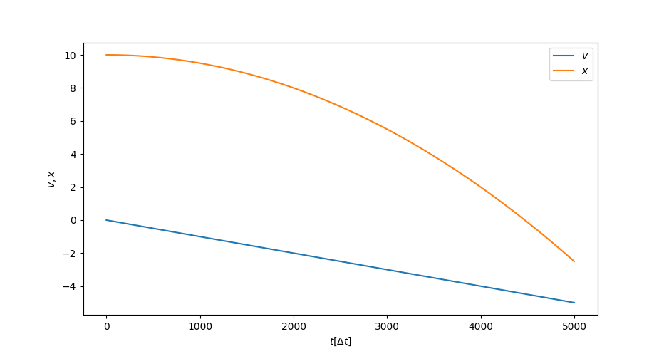
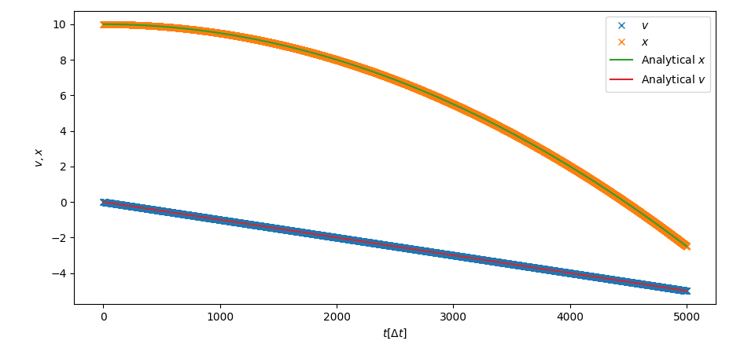

So in the last post we “handwavingly” derived how one could come up with a integration scheme to solve Newtons equation of motion for a body. In this post we want to implement such a code in python. The end result of our effort will hopefully be a code capable of simulating a falling ball (perhaps even with added air resistance?). To start of lets take a look again at the equation that we had derived:
\[ \begin{gather} \frac{x(t+\Delta t) - x(t)}{\Delta t} = gt + v_0 \Leftrightarrow x(t + \Delta t) = gt\Delta t + v_0 \Delta t + x(t) \end{gather} \]
Remember that this formula was derived when we started with the assumption of a constant force acting on the body. This scheme might be very well implemented in some programming language already, but we want to make it more general. Let’s start again with Newtons law of motion:
\[ \begin{equation} F = ma \Leftrightarrow a = \dot{v} = F/m \end{equation} \]
If you now want to utilize the same trick as last time and approximate the derivative in time by a finite difference quotient, you arrive at:
\[ \begin{gather} \dot{v} = F/m , \text{ use } \dot{v} \approx \frac{v(t+\Delta t) - v(t)}{\Delta t}\\ \implies \frac{v(t+\Delta t) - v(t)}{\Delta t} = F/m \\ \implies v(t+\Delta t) = \frac{F}{m} \Delta t + v(t) \end{gather} \]
This above formula is remarkable, because it shows us that we might use the same tricks to arrive at a even more general expression. Given any (!) force on the particle we can approximate the particles velocity at the next time step. Now the term that we had before calculated the position of the particle and usually the position is also the thing of interest in a particular calculation (think for example calculating were a bullet might land after it has been fired from a gun). Luckily for us calculating the postion is also pretty easy once we have the velocity. If you could follow the (pretty fast and sloppy) derivation so far, then you might have already have the main gist of how one could calculate the position. We basically apply the same trick again:
\[ \begin{equation} v = \dot{x} \text{ and thus}\\ \frac{x(t+\Delta t) - x(t)}{\Delta t} \approx v\\ \implies x(t+ \Delta t) = v\Delta t + x(t) \end{equation} \]
Now we are basically done deriving a general numerical integration scheme. Given that we now what force is acting on a given particle we may calculate its force at the next step in time. And because this enable us to calculate the velocity, we can then also calculate the position at each point in time. This scheme is known as the “Euler scheme” and for reference let’s write the important equations down again:
\[ \begin{gather} v(t+\Delta t) = \frac{F}{m} \Delta t + v(t) \\ x(t+ \Delta t) = v\Delta t + x(t) \end{gather} \]
Now we could just go ahead and implement the two equations easily, but it turns out that they are a bit flawed. I won’t go into too much detail why, but basically the normal “Euler scheme” is not energy conserving, which has to do with what is called “ergodicity” of the equation. Not having energy conservation is of course a huge problem, because for one it is unphysical, and secondly it might cause a simulation to “explode”. Unphysical explosions in simulations can happen if there is a slight buildup of energy during each time step (because the scheme is not energy conserving, the energy does not stay the same), until the energy exponentially builds up as the numerical error gets larger and larger with the increasing energy in the system. That is something that we want to prevent at all costs, obviously.
Luckily for us there is a slight variation to the scheme, which is known as the “Velocity-Verlet”-algorithm, which is energy conserving. The basic idea of this modification is to calculate the velocity at “half the time step”, which will hopefully become clear once I write the algorithm down:
\[ \begin{gather} v(t + \frac{1}{2} \Delta t) = v (t) + \frac{1}{2} a(t) \Delta t\\ x(t +\Delta t) = x(t) + v(t + \frac{1}{2} \Delta t) \Delta t\\ a(t+\Delta t) = F/m\\ v(t+\Delta t) = v (t + \frac{1}{2}\Delta t ) + \frac{1}{2} a (t+ \Delta t) \Delta t \end{gather} \]
Now while this might look like a lot more steps than the Euler method, it is almost the same beast. Note that we also calculate the velocity and from that the position of the particle. The only thing that is new here is that we first calculate the velocity at half the time step \[v(t + \frac{1}{2} \Delta t)\] and use that as the basis for our positional calculation. After we have updated the position, we update the velocity for the next step (\[v(t + \Delta t)\]), using the newly calculated acceleration. It might take a bit to get used to all that but you will soon see that implementing this is a breeze.
Implementation
Let’s get right into it. We could expect our code to be modularized
in a function verlet(v, x, a, force, m). This function will
get the velocity v, the position x and the
acceleration a of the previous time step (and of course the
mass of the particle). We also want to be able to specify which force
will be used to update the velocity, so force ideally will
be a function that we pass to verlet. A naive
implementation in python might look something like this:
def verlet(v, x, a, force, m, dt=.001):
v = v + .5*a*dt
x = x + v * dt
a = force(v, x, a, m)/m
v = v + .5*a*dt
return v, x, a Simple, right? Notice that we expect force to be a
function with arguments (v, x, a, m) which is a nice way of
allowing the programmer to specify any force that depends on the
velocity, position, acceleration and mass of the particle. Furthermore
we also specify the time step dt as a keyword argument. We
always want to be able to control the time step, because as mentioned
above the value of that step has to be carefully chosen for the specific
problem at hand. Having a time step that is too large makes our solution
imprecise or worse make the whole solution unstable (see “explode” as
written above).
So now that we have written these six lines of code, let us test them. To do so, we first have to specify a force of our specific system. For our case of a constant force on the particle (gravity) we can just simply write another function like this:
def const_force(v, x, a, m, g=-1):
return g*mNow we are more or less done. To test this code, we may specify the starting conditions for the position, acceleration and velocity. Let’s for example say that we want to simulate a diver jumping from a height of 10 simulation units (Simulation units are just arbitrary units. Usually we match those units to some units in the real world. For example 10 simulation units in our case could mean 10 meters. You just have to make sure that every unit is correct in relation to the unit that you fix to real world parameters.) If we also say that the diver starts with a initial velocity of 0, and immediately feels the ackeraltion by gravity we may end up with initial parameters like:
x = 10
v = 0
m = 1
g = -1
a = g*mThen we just have to call the verlet integrator function over and over again and we have our first simulation. If we want to simulate for 5000 time steps, we could for example write the following code:
x = 10
v = 0
m = 1
g = -1
a = g*m
T = 5000
vs = np.empty((T))
xs = np.empty((T))
for i in range(T):
v, x, a = verlet(v, x, a, const_force, m)
vs[i] = v
xs[i] = xNote how we also created two numpy arrays (np.empty())
which are going to store the velocities and positions over all time
steps. If you want to copy the full example code, you can find the
source here. Using a plotting
library, we can then plot the trajectory and evolution of the velocity,
which is shown in fig.1.

That is already looking pretty nice. From the analytical solution that we had derived in the last post, we had already expected a linear dependence on time for the velocity, and a quadratic dependence on time for the position and we are evidently getting that here. To further see how good our approximate solution is, I also plotted the analytical solution together with the simulation results in fig.2, which evidently shows that our solution is practically indistinguishable from the “correct” solution.
